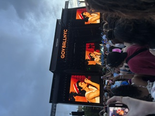
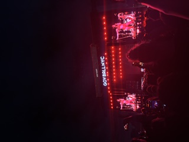

Here are the concerts I recommend on seeing, along with some tips to help you have a better concert experience.
Recommendations

Out of all the concerts I've been to I have a top three favorite: Tyler the Creator, Steve Lacy, and Harry Styles. Putting aside the fact that all of these artists have some of my favorite music, they also have amazing audience interaction and energy as well. Two of these artists were in the same venue, MSG, while the other was in Forest Hills Stadium. The vibes, the people, and the music made each of these experiences unforgettable. If any of you have the chance to see these artists, in any venue, jump at the chance it was truly amazing. For each of these performers the crowds were hype and excited, also there was little to no frustration while entering and exiting the venue. Going to concerts is about the experience of seeing the artist live rather than knowing the exact lyrics of every single song so enjoy your time there.
Tips

Being to the number of concerts I have there are a few tips that I would use when going to these concerts. Firstly this depends on whether you have an assigned seat or if you are in the pit of the venue. I would say the user experience when you have assigned seats is easier because you have somewhere to immediately go to once you get through security, your experience will differ depending on whether or not you want to watch the opener or not. If you do plan on watching the opener, I would arrive to both find your seats and go to the restroom, also adding additional time to wait on the merch line if you want to purchase. You can alter this strategy based on time whether or not you're seeing the opener. If you are seated in the pit I would arrive very early to wait online if you want to get a barricade, barricade being the front row of the standing section. If you do get barricaded you must understand that you cannot move places the entirety of the performance or else you will lose your spot. A very common tactic when getting merch is to go during one of the popular songs as the performer is playing it. This ensures there's zero to no line at the merch stands, however they may be out of sizes at this point. My tip, that I never abide by but often see, is leaving the concert 1 to 2 songs early to beat the traffic. Personally, I always say to the end because it is part of the experience however you will get out of the arena quicker if you leave earlier. Last and final tip I have is if you are taking public transportation as I usually do, many people walk to the further stop rather than the one right outside of the Arena to ensure a seat once on board.